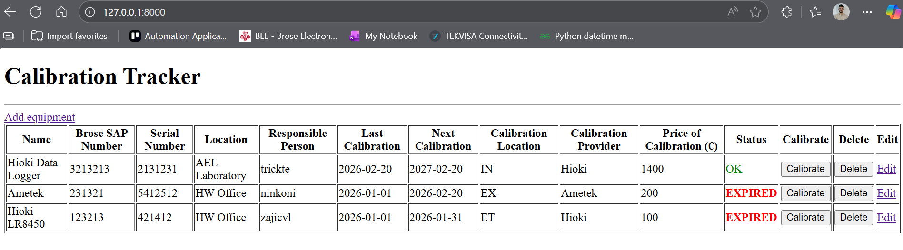
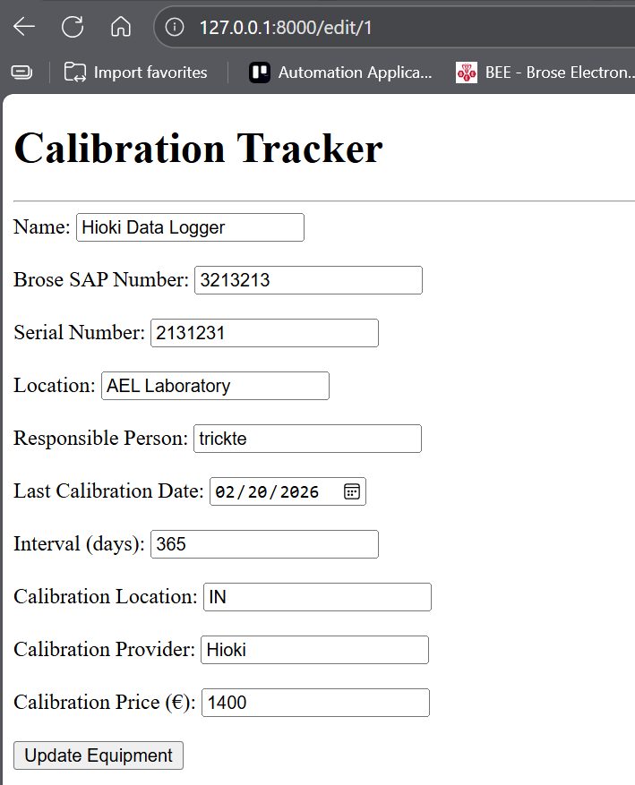
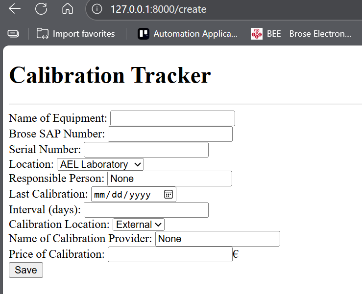

Web Service for tracking equipment calibration dates
Web Development2026
The Brose employees had to keep track of equipments calibration date so they could send it for calibration on time.
The problem is that due to dynamical working environment often time this task was overlooked.
Idea for solution to this problem was making web service that would notify employees if equipment was ready for calibration.
User interface: I developed GUI using HTMX and Jinja2 html templates so the UX can be intuitive and application easily
scalable. User can input equipment's data and add it into the table of available equipment. Table consists of equipment's parameters
and 3 buttons: Calibrate, Delete and Edit.
When equipment gets calibrated user can press Calibrate button and the date fields will be updated. Besides that there is mailing
page that allows user to add mail addresses which will receive status of the equipment dates.
Database: Database is implemented using SQLAlchemy and SQLite consisted of 2 tables for equipment and mailing users.
All data is stored loccaly
API: For communication between database and service I used FastAPI which I was already familiar with
Challenges & Solutions
• Challenge: - Important feature of the service was possibility of sending mails to the employees as soon as 30 days
are left till calibrations expiring date.
• Solution: - For this to be possible I had to implement WebSocket that would track date's status every 5 seconds and
be ready to send mail once it recognizes the date's due.
Visuals & Schematics

Content table
Table of all available equipment with their parameters and buttons for managing them.
User can easily add new equipment, edit existing one, delete it or mark it as calibrated.

Edit Equipment
User can edit equipment's parameters by clicking Edit button and changing the data in the form.

Create Equipment
User can add new equipment by filling out the form and submitting it.
Impact
• Tracking of calibration for the equipment has become easier than ever.
• Task is secured to not get overlooked during the work.
• Human error risk reduced to minimal by implementing calibrate button.
• Every employee can now access the tracking table.